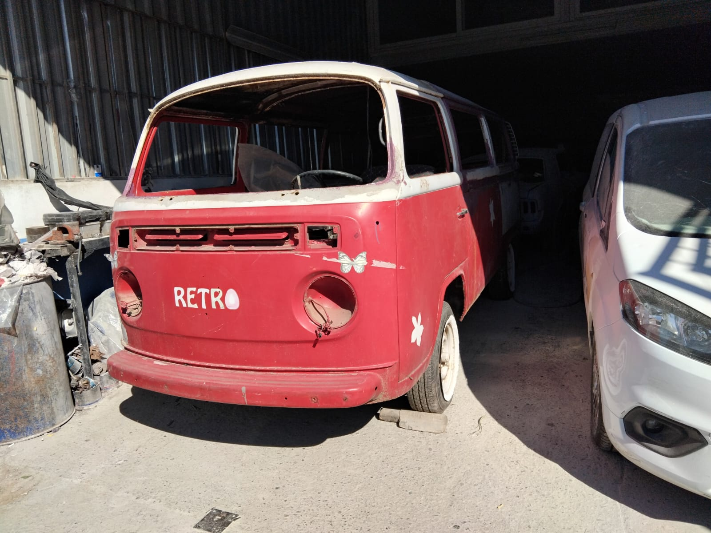

Araçcınızın Geometrisini Koruyoruz
Otomobilinizin gövdesi, sürüş güvenliğinizin temel taşıdır. Kaza sonrası oluşan göçük, ezik veya panel deformasyonları sadece estetik değil, yapısal bütünlüğü de tehdit eder. NeTT olarak, Antalya Akdeniz Sanayi Sitesi'ndeki modern tesisimizde, aracınızın şŞase geometrisini fabrikasyon ölçülerine sadık kalarak onarıyoruz.
Hasar ne boyutta olursa olsun, önceliğimiz her zaman parçayı değiştirmek yerine onarımaktır. Çektirme sistemleri ve milimetrik kalibrasyon cihazlarımızla, sacı esnetmeden orijinal hatlarına geri döndürüyoruz. Bu sayede hem cebinizi koruyor hem de aracınızın "orijinal" statüsünü sürdürmesini sağlıyoruz.
Profesyonel Kaporta İşçiliği
- Şase Onarımı: Şase düÖzeltme tezgahında milimetrik sapma olmaksızın fabrikasyon ayarlama.
- Panel Düzeltme: Değişim gerektirmeyen hasarlarda parça kurtarma garantisi.
- Alüminyum Kaporta: Lüks araçların alüminyum gövdeleri için özel kaynak ve çekme teknikleri.
- Astar ve Zemin: Onarım sonrası boyaya hazırlıkta korozyon önleyici epoksi astar kullanımı.
Hızlı Onarım, Güvenli Teslimat
Ufak çaplı otopark hasarları ve sürtmeler için aynı gün teslimat seçeneklerimiz bulunmaktadır. Hasarın fotoğraflarını WhatsApp üzerinden bize ileterek anında onarım süresi ve fiyat bilgisi alabilirsiniz.


HASAR İÇİN TEKLİF ALIN
Kazalı bölgenin fotoğrafını WhatsApp'tan bize gönderin, ücretsiz eksperimizle hemen inceleyip fiyat verelim.